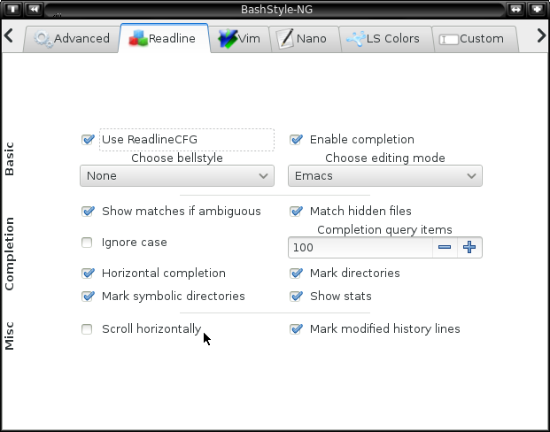

Chapter 5: Readline

5.0 Use ReadlineCFG:
Let BS-NG setup Readline.
5.1 Enable Completion:
Enable Filename/Pathcompletion by pressing [TAB].
5.2 Change Bellstyle:
Change the Bellstyle of readline
| audible |
beep |
| visible |
|
| none |
---- |
5.3 Choose Editing Mode:
Whether to use Emacs or Vi like shortcuts
Bashs default setting is Emacs
5.4 Show matches if ambiguous:
Instead of ringing the bell, immediately all
possibilities for completion are shown.
5.5 Match hidden files:
Include hidden files in the completion.
5.6 Ignore case:
Let completion ignore upper and lowercase.
5.7 Completion Query Items:
When pressing [TAB] for completion, this is the query limit.
If the amount of possible completions is higher or equal to
this value ask the user whether to display all completions.
5.8 Show stats:
Display stats when completing file names.
| @ |
= link |
| / |
= folder |
| * |
= executable |
5.9 Horizontal completion:
Arrange completion possibilities horizontally rather than vertically.
5.10 Mark directories:
Completion marks directories with a `/', that saves one time pressing [TAB].
5.11 Mark symbolic directories:
The same as `Mark Directories', but for symbolic links.
5.12 Scroll horizontally:
Scroll the line horizontally, rather than entering a new line,
if the command is too long to be displayed in one line.
5.13 Mark modified history lines:
When cycling trough previously ran commands, mark modified
history lines by prepending an asterisk (*).